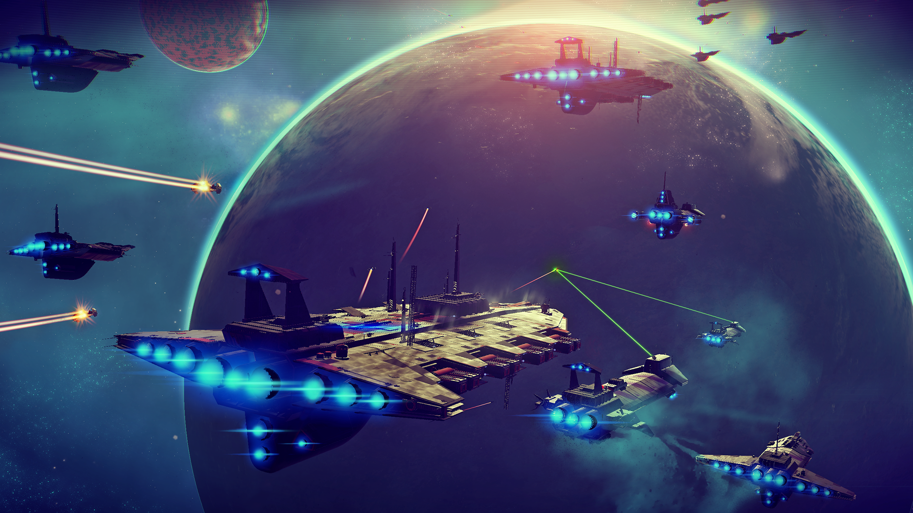

No man's sky is an sandbox space exploration game made by Hello Games released on the 9th of august 2016. The game promised a lot of features and playability for the players including procedurally generated universe, multiplayer, base building, and massive space battles.
However upon the game's release it became obvious that the game wasn't what they had promised. It was buggy, grindy and just boring at most times and it didn't have nearly as many features as first promised.
The History
The game was first announced in 2013 at the VGX Awards and people got excited quickly. What was shown in the first trailer for it caught attention for a lot of people since it was a game like no other.
Sean Murray, the founder of Hello games, started quickly getting interviewed about the game. Sean promised many features and it only raised peoples expectations by a lot. Fast forward a few years and the game is not what everyone expected.
It also didn't help that the game costed 60$ since people were expecting something for their money.
The Reconstruction
Even though the game was hated in the game community and player numbers were dropping drastically, Sean and the team never gave up on the game. And for many months they did not say anything to anyone,
making everyone think that the game had been abandoned and they were making a new game. Until finally a few months later they made a large update to the game called the "Foundation Update". The Foundation
update was quite literally the foundation of many updates and the future of the game itself. It brought base building and many bug fixes to the game. A few months go by and a new update arrives. "Atlas Rise Update"
was an overhaul to the story of the game and many other features including portals, trade and procedurally generated missions. "Next Update" was and is one of the biggest updates to the game so far.
It's biggest feature was that you could now play in multiplayer with your friends. Updates kept rolling in and are still rolling in to this day, bringing more and more features to the game, making it
the game that Sean originally wanted. Over the years, players returned, and Hello Games gained their reputation back.
How is the game ?
I've played the game with and without friends and had a blast. With a total play time of 36 hours so far, I can tell I've only scratched the surface of this game's capabilities. The game is rich in
exploration and immersion. Even though I've had bugs here and there, I definitely recommend this game to everyone who is interested in space or just a good game.
-- Hér eru myndir frá leiknum --


